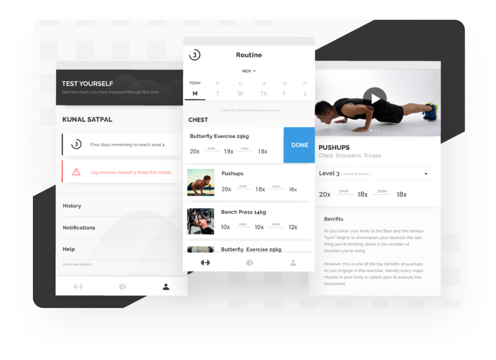

Gym-On | Workout Trainer

Gym-On | Workout Trainer
Internship with Cure.fit
Ever feel like you should manage time for your health, buy new workout pants and immediately regret your decision.
It’s always very difficult to get motivated to gym especially for the beginners as physical workout gives a lot of strain on body and by the time they complete their 1st week of training, most of them had already quit gymming.
Improper or no knowledge of one’s own capabilities, limits and progress is one of the main reason why generally people quit workout in between.
Research
I interviewed a few people from my hostel and noted their response, here are the questions that I asked:- When did you start going to gym?
- What keeps you motivated towards gym and workout?
- What is the main reason that you quit gymming? — for those who quit workout
- What are the main problems faced by you, during workout?
Defining Goals
- To help beginners know their abilities, limits and exercise according to it.
- To provide daily detailed schedule to the users.
- To make workout more engaging and interesting.
- To help them to know their daily progress in a better way.
Finding Solution
- The basic idea was to create an app that takes input from the user about their 1st day at gym and generates a proper schedule according to the data.
- Adding elements of gamification would make the experience more engaging and also help the user to monitor their progress.
Deciding Features
On the basis of the above personas and questions asked in interviews a number of features were brainstormed but I decided to keep a few primary features first and thereby, working towards designing a MVP.- Generate Schedule — Evaluating users strengths and limits according to the inputs given while onboarding was kept as the basic and backbone feature of the application.
- Daily Check — To ensure that the users follow their schedule, a daily check was required.
- Introducing Levels — Everyone faces a dip in motivation and being motivated all time is challenging especially in case of gymming. In order to solve this problem, I gamified the experience by introducing levels. A large goal can be achieved easily by splitting it into small targets or levels. Achieving these small targets would help users to quantify their success in terms of number of levels completed. Thus, this would increase the engagement of the users with the application and simultaneously, it would keep them motivated towards their daily workout sessions.
Information Architecture

Sketches

Wireframes

Brandings

Workout is all about discipline, regularity and power. Black is the color that represents these traits well.
A professional yet a bit less formal font was required to go in resonance with the whole essence of the application.
A professional yet a bit less formal font was required to go in resonance with the whole essence of the application.
Designes

Onboarding need to be easily understandable by the user and to ensure that, the whole process is divided into steps to make it pleasing and easier. At every step the user need to give some quantitative input using the plus minus buttons. Slider was not used as the upper limit is not defined.

Lower navigation is used instead of the conventional hamburger menu, hamburger menu hides the main navigation from the user and results in bad UX.
Tabs in the lower navigation were decided according to their hierarchical importance, remembering that should consists of different domains, so that user might not need to navigate frequently. GetSweat has three tabs exercises, stats and profile.
This tab let user have a proper view of their daily schedule with every proper detail of exercise required. The schedule can be accessed using day tabs above and user can also have a detailed view of the exercise i.e. a proper tutorial video, images, sets according to level and benefits associated with the workout.
User can mark the exercise as done by swiping left on the card.
User can mark the exercise as done by swiping left on the card.
Stats
Displaying stats is a very important factor to keep user motivation. Here users can view there workout history and chart to show to what extent the routine was followed.Profile
Profile page consists of some basic alerts regarding schedule and information about days required for level up. Test and Analysis feature is also accessed through this tab only where user can try a few basic exercises and know there progress till far. Some basic setting like notifications, view history and log out are also accessed by this tab.
That’s all folks
This project was a good learning experience for me. It helped me to improve my UX research skills by following a user-centered design approach. Designing a black and white UI and still ensuring that It looks good was definitely an exciting challenge for me. See more of my works


Say Hello
I am available for freelance projects, remote work or just discussing design, feel free to ping me at
 kunalsatpal1@gmail.com
kunalsatpal1@gmail.com